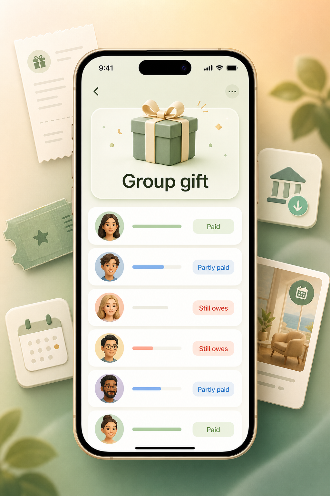
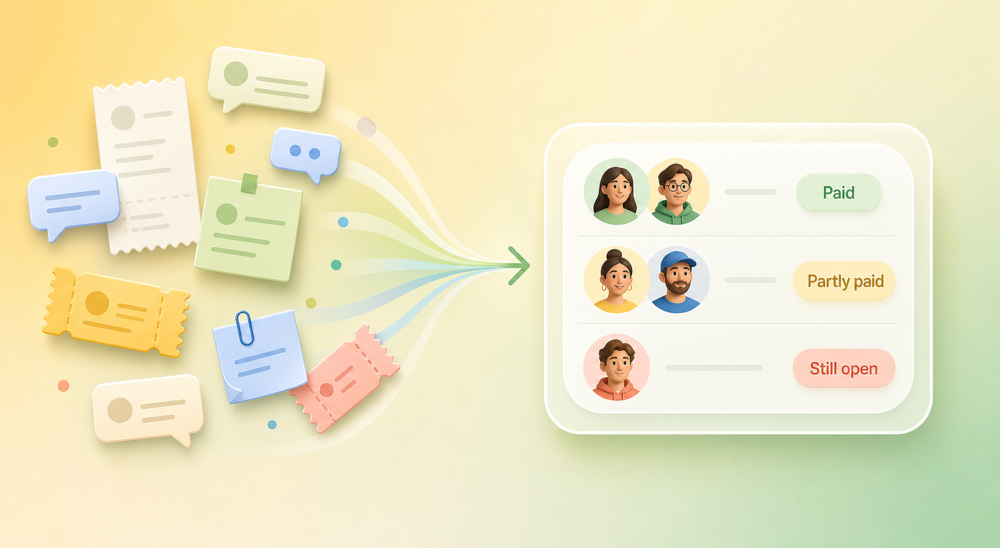

Group Paybacks
Group Payback Tracker
Paid first for a gift, dinner, tickets, deposit, booking, or shared purchase? Track who paid you back, who partly paid, and who still owes — without rebuilding the situation from chat messages.
Use You Owe Me when a quick split is not enough anymore because paybacks happen later, in different amounts, or from different people.
One person can keep the record. Others do not need to install the app just to understand what is still open.

What is a group payback tracker?
A group payback tracker helps you keep a clear record after one person pays for something on behalf of a group. It shows each person’s share, who already paid you back, who paid only part, and who still owes.
This is different from a simple split calculator. A split calculator tells you what each person should pay. A group payback tracker helps after that, when the money comes back over time.
Use it when one person paid first
Group Paybacks are useful when you covered the cost first and need to collect or track paybacks later.
Group gifts
One person buys the gift, then everyone contributes their share later.
Tickets and bookings
You paid for tickets, rooms, reservations, deposits, or a shared booking before everyone sent their part.
Dinner or shared purchase
One person covered the bill, but paybacks happen afterward instead of at the table.
Deposits and reservations
You paid upfront for something the group agreed to share, and the final paybacks are still open.
Office or team gifts
A lightweight way to track contributions without turning it into a formal finance process.
Roommate or family shared costs
Useful for one shared cost that needs payback tracking, even if the wider relationship has its own balance.
These situations often start simple, but they become messy once some people pay, some forget, someone pays only part, and the original chat thread gets buried. If shared costs keep repeating with the same people, the broader Shared Expense Tracker may fit better than treating each one as separate.
Why group paybacks get confusing
A group payback usually becomes confusing because the split and the actual paybacks happen at different times.
People pay at different times
One person pays immediately, another pays next week, and someone else needs a reminder.
Partial payments happen
Someone might send part of their share now and the rest later.
Chat history gets buried
The original total, who was included, and who already paid can disappear inside messages.
Payment apps show transfers, not the full situation
A transfer can show that money moved, but not always what it was for, who was included, or what is still open.
A one-time split does not track completion
A split calculator gives the shares. It does not keep the open status updated after people start paying back.

What to record for a group payback
For a clear group payback record, keep enough detail that nobody has to reconstruct the situation later.
| Detail | Why it matters |
|---|---|
| Total amount | The original cost everyone agreed to share |
| What it was for | Gift, dinner, tickets, booking, deposit, or purchase |
| Who was included | The people who agreed to pay a share |
| Each person’s share | Equal or custom amount |
| Who paid fully | People who are settled |
| Who paid partly | People with a remaining amount |
| Who still owes | People with no repayment yet |
| Date and notes | Context for later |
| Next reminder date | Helps avoid repeated awkward checking |
The goal is not to make the situation formal or uncomfortable. The goal is to keep the record clear enough that nobody has to guess later.
Example: group gift payback
You paid $240 for a group gift. Six people agreed to chip in $40 each.
| Person | Share | Paid back | Status | Still owes |
|---|---|---|---|---|
| Anna | $40 | $40 | Paid | $0 |
| Ben | $40 | $40 | Paid | $0 |
| Maya | $40 | $40 | Paid | $0 |
| Leo | $40 | $20 | Partly paid | $20 |
| Sam | $40 | $0 | Still open | $40 |
| Nina | $40 | $0 | Still open | $40 |
Remaining total: $100 still open.
Without a clear record, you may remember that “some people paid,” but not exactly who paid, who partly paid, and how much is still open.
Copyable group payback reminders
A good reminder is specific enough to be useful, but calm enough not to make the situation heavier.
Do you need a split calculator, Group Paybacks, or something else?
The best tool depends on whether you only need the split, or whether the paybacks stay open afterward.
| Situation | Best next step |
|---|---|
| You only need to divide one bill right now | Use the Split Expense Calculator |
| You paid first and people will pay you back later | Use Group Paybacks in You Owe Me |
| Some people paid, some partly paid, and some still owe | Use Group Paybacks in You Owe Me |
| The same people keep sharing costs over time | Use a running balance |
| Everyone wants to join the same shared group ledger | A collaborative group expense app may be better |
| You only need one quick reminder message | Use the Payback Reminder Generator |
| You need a longer record with history and follow-ups | Track it in You Owe Me |
You do not always need an app. If everyone pays immediately, a calculator or message may be enough. You Owe Me helps most when the group cost stays open and you need a record that keeps changing as people pay you back.
How You Owe Me helps with group paybacks
You Owe Me gives the shared cost one clear place to live until the payback is finished.
Create one Group Payback
Keep the shared cost in one place instead of spreading it across notes, screenshots, payment apps, and messages.
Add people and shares
Track equal or custom shares for the people included in the cost.
See paid, partly paid, and still open
Know who is settled, who paid only part, and who still has an amount open.
Keep each person’s balance correct
A group payback can stay connected to each person’s own balance history, so the group record and individual records stay aligned.
Send calmer reminders
Use the actual amount and history to send a specific reminder without sounding confrontational.
Share clarity without forcing setup
One person can manage the record and share the status when needed, without requiring everyone else to install another app just to understand what is open.
See all You Owe Me features for running balances, Group Paybacks, reminders, Live Links, statements, and calmer money conversations.
When a split calculator is enough — and when it is not
A split calculator is enough when
- everyone pays immediately;
- you only need to know each person’s share;
- there are no partial repayments;
- you do not need to remember the status later.
Group Paybacks is better when
- you paid first;
- people repay later;
- some people pay only part;
- you need to know who still owes;
- you want to avoid checking old messages;
- you may need to send reminders;
- the shared cost should stay connected to each person’s balance.
When a full group expense app may be better
You Owe Me is strongest when one person paid first and wants a clear, lightweight record of paybacks.
A full collaborative group expense app may be better when everyone wants to join the same group ledger, many people are adding expenses from their own devices, or you are tracking a full trip with many shared expenses from many payers.
Group Paybacks in You Owe Me is not trying to replace every collaborative group expense workflow. It is for the common real-life case where you paid for something, people owe their shares back, and you want to keep the payback status clear. If you are choosing between a collaborative group ledger and You Owe Me’s one-person payback tracking model, read the Splitwise alternative comparison.
What this looks like in real life
Group gift: You buy the gift, six people chip in, two people still owe, and one person paid half. Group Paybacks keeps the list clear until everyone is settled.
Tickets: You buy tickets first, then friends repay their share later. You can track paid, partly paid, and still open amounts.
Dinner: One person covers the bill because it is faster, then the group sends money afterward. You do not need to rely on memory or a buried chat thread.
Deposit or booking: You pay a deposit or booking upfront and track each person’s contribution as it comes in.
Group payback tracker FAQ
What is a group payback tracker?
A group payback tracker is a record for a shared cost one person paid first. It tracks each person’s share, who paid back fully, who paid partly, and who still owes.
Is this the same as a split calculator?
No. A split calculator tells you how much each person should pay. A group payback tracker helps after the split, when repayments happen over time.
Do other people need to install the app?
No. One person can keep the record. You can still share a clear message, summary, statement, or link when the other person needs to understand what is open.
Can I track partial paybacks?
Yes. Partial paybacks are one of the main reasons to use a tracker instead of only a calculator or chat message.
When should I use a full group expense app instead?
Use a full collaborative group expense app when everyone wants to join the same shared ledger and many people will add expenses. Use You Owe Me when you paid first and mainly need a clear payback record.
What if the same people keep sharing costs?
If the same people keep exchanging money, a running balance may be more useful than treating every cost as a separate one-time split.
Can this help with group gifts, tickets, dinner, or deposits?
Yes. Those are some of the clearest use cases: one person pays first, then the group pays back their shares over time.
Related tools and guides
Track group paybacks without losing the thread
When you pay first for a group cost, You Owe Me helps you keep the list clear as people pay you back.
Track the shared cost, each person’s share, paid and partly paid amounts, remaining balances, reminders, and history in one place.
Best for gifts, tickets, dinner, deposits, bookings, and shared purchases where one person paid first.
Updated